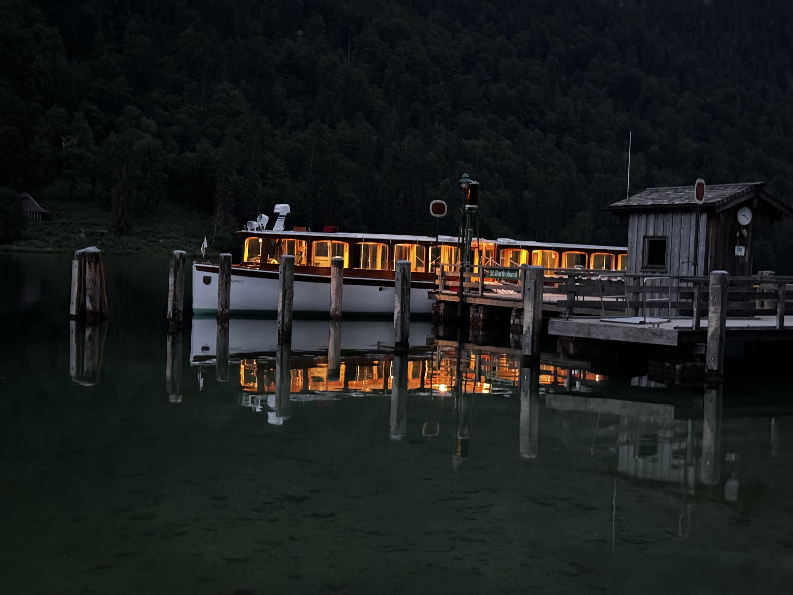

Private Winter Hike in the Berchtesgaden Alps
Private Winterwanderung in den Berchtesgadener Alpen
Experience the silent magic of the Alps – when glistening snow transforms forests, streams, and lakes into an enchanted winter wonderland. This private winter hike leads you along cleared trails through some of the most beautiful valleys and lakeside landscapes of Berchtesgaden National Park – either through the mystical
Enchanted Forest
 Enchanted Forest & Lake
Visit the rustic mountain lake and the Enchanted Forest with us
See details
or to the legendary
Emerald Lake
Enchanted Forest & Lake
Visit the rustic mountain lake and the Enchanted Forest with us
See details
or to the legendary
Emerald Lake

Emerald Lake
An emerald-green mountain lake in stunning surroundings – peaceful, striking, and well worth a visit.
See details
.
Erleben Sie die stille Magie der Alpen – wenn glitzernder Schnee Wälder, Bäche und Seen in eine verzauberte Winterwelt verwandelt. Diese private Winterwanderung führt Sie auf geräumten Wegen durch die wohl schönsten Täler und Uferlandschaften des Nationalparks Berchtesgaden – wahlweise entlang des mystischen
Zauberwalds
Zauberwald & See
Besuchen Sie mit uns den urigen Bergsee im Tal und den Zauberwald
Details sehen
oder zum legendären
Smaragdsee
Smaragdsee
Ein smaragdgrüner Bergsee in beeindruckender Kulisse – still, eindrucksvoll und einfach sehenswert.
Details sehen
.
The Trail – Nature, Light, and Silence
Der Weg – Natur, Licht und Stille
Together with your guide, you’ll stroll along gentle, well-maintained paths through fairytale-like forests and past snow-covered shores. If you're lucky, snow will crunch under your boots, your breath will rise in little clouds into the crisp winter air, and with every step, a new panorama will unfold.
Gemeinsam mit Ihrem Guide spazieren Sie auf sanften, gut begehbaren Pfaden durch märchenhafte Wälder und entlang verschneiter Ufer. Mit etwas Glück knirscht unter Ihren Schritten der Schnee, der Atem malt kleine Wolken in die klare Winterluft, und mit jedem Schritt öffnet sich ein neues Panorama.
Will you choose deep green waters with views of a lakeside pilgrimage chapel, or a glacial stream where ice and water have transformed the landscape into a magical world?
Entscheiden Sie sich für tiefgrünes Wasser mit Blick bis zur Wallfahrtskirche am See, oder einen Gletscherbach, wo Eis und Wasser die Felsen und Bäume in eine verwunschene Welt umgewandelt haben?
A Scenic Break
Kleine Auszeit mit Aussicht
At a particularly beautiful spot, you’ll enjoy a relaxing break – with hot tea from a thermos and a small seasonal snack. A moment of stillness to breathe, marvel, and take in the beauty of winter.
An einem besonders schönen Platz legen Sie eine genussvolle Pause ein – mit heißem Tee aus der Thermoskanne und einem kleinen, saisonalen Snack. Ein Moment der Ruhe, um einfach durchzuatmen, zu staunen und die Schönheit des Winters in sich aufzunehmen.
Gently Active, Deeply Restorative
Sanft aktiv, wohltuend entschleunigt
This tour is perfect for anyone who wants to experience winter in an active yet relaxing way. Away from the crowds, immersed in pure nature – an experience that refreshes both body and mind.
Diese Tour ist ideal für alle, die den Winter aktiv, aber entspannt erleben möchten. Abseits der Massen, eingebettet in reine Natur – ein Erlebnis, das Körper und Geist gleichermaßen erfrischt.
Why Mountain Concierge?
Warum Mountain Concierge?
We offer you the opportunity to discover the sights in and around Berchtesgaden privately and in peace, without the hustle and bustle of mass tourism. Benefit from our local expertise and experience the mountains from a whole new perspective.
Wir bieten Ihnen die Möglichkeit, die Sehenswürdigkeiten in und um Berchtesgaden privat und in Ruhe zu entdecken, ohne den Trubel des Massentourismus. Profitieren Sie von unserer lokalen Expertise und erleben Sie die Berge von einer ganz neuen Seite.
Book your tour today!
Buchen Sie noch heute Ihre Tour!
Contact us
zum Kontakt
Tailored for the discerning traveler
Maßgeschneidert für Reisende mit hohen Ansprüchen
Winter Tours
Winter Touren
Our curated selection of private tours offer more than sightseeing — they offer a story, a connection, a moment that becomes a memory.
Unsere ausgewählte Auswahl an privaten Touren bietet mehr als nur Sightseeing - sie bieten eine Geschichte, eine Verbindung, einen Moment, der zur Erinnerung wird.
An alpine Christmas full of tradition
Ein alpenländisches Weihnachten voller Tradition
Wander through the charming streets of Berchtesgaden during Advent—where festive lights, authentic crafts, and alpine flavors create a timeless winter atmosphere.
Schlendern Sie im Advent durch die stimmungsvollen Gassen Berchtesgadens – wo festliche Lichter, echtes Handwerk und alpenländische Köstlichkeiten eine zeitlose Winteratmosphäre schaffen.
See tour details
Tourdetails sehen
Gin-Tonic Vault
Gin-Tonic Tresor
A tasting with a hidden twist
Eine Verkostung mit geheimnisvollem Flair
Discover a one-of-a-kind gin & tonic tasting at Grassl—set in an extraordinary location that holds more than just fine spirits. An exclusive winter highlight for curious guests.
Erleben Sie eine einzigartige Gin-&-Tonic-Verkostung bei Grassl – an einem außergewöhnlichen Ort, der mehr birgt als edle Spirituosen. Ein exklusives Winterhighlight für neugierige Gäste.
See tour details
Tourdetails sehen
Discover Berchtesgaden’s underground world
Entdecken Sie Berchtesgadens Untertagewelt
Journey deep into the historic salt mines—ride the slides, cross the mirror lake, and experience the magic of Berchtesgaden below ground.
Tauchen Sie tief in die historischen Salzbergwerke ein – rutschen Sie durch Stollen, überqueren Sie den Spiegelsee und erleben Sie die Magie Berchtesgadens unter Tage.
See tour details
Tourdetails sehen
Snowshoe Hike
Schneeschuhwanderung
Discover Berchtesgaden on snowshoes
Entdecken Sie Berchtesgaden mit Schneeschuhen
Trek through untouched snowy landscapes—step off the beaten path, enjoy panoramic alpine views, and embrace the peaceful beauty of winter on a snowshoe hike.
Wandern Sie durch unberührte Winterlandschaften – verlassen Sie die ausgetretenen Pfade, genießen Sie alpine Panoramablicke und erleben Sie die stille Schönheit des Winters bei einer Schneeschuhwanderung.
See tour details
Tourdetails sehen